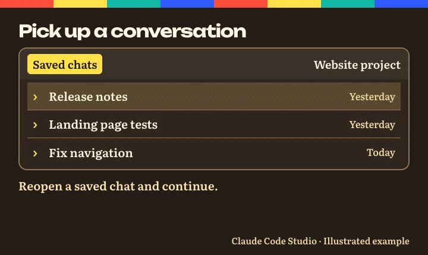
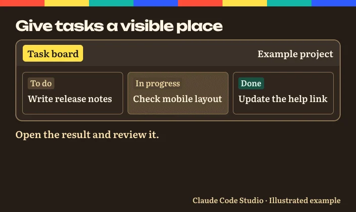
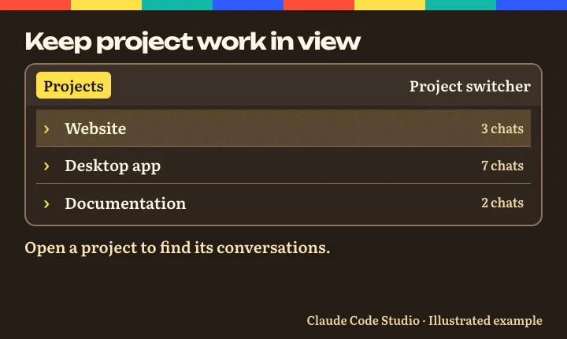
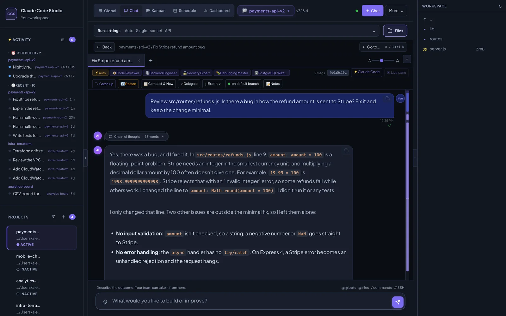

Where did that conversation go?
Open a saved conversation and pick up where you left off. Already use the command line? Import existing Claude Code sessions from a project folder.

Reopen yesterday’s chat, see what’s on your task board, and find the right project without digging through terminal windows.
Use it in your browser or as a desktop app. You’ll need Claude Code installed and signed in.
macOS with Apple silicon · Windows · Linux
Illustrated examples. The actions happen in the app.
Open a saved conversation and pick up where you left off. Already use the command line? Import existing Claude Code sessions from a project folder.

Put tasks on cards. The board shows what’s queued, what’s running and what’s done. Open the result and review it before using it.

Save the folders you work in and switch between projects from the sidebar. Start a chat in the project you’ve opened and find its conversations again later.

Bring your saved sessions into Studio and keep working from the same project folders. Studio uses your existing Claude Code installation.

Install the Claude Code command-line tool and sign in first.
Download the desktop app for your system, or follow the self-hosted web guide on GitHub.
Choose the folder you want to work in. Then start a chat or open the task board.
Studio uses your own Claude Code sign-in. Claude access and any charges depend on your account and plan.
You run Studio yourself. The local desktop app runs on your computer. For the web version, follow the setup and access instructions in the repository.